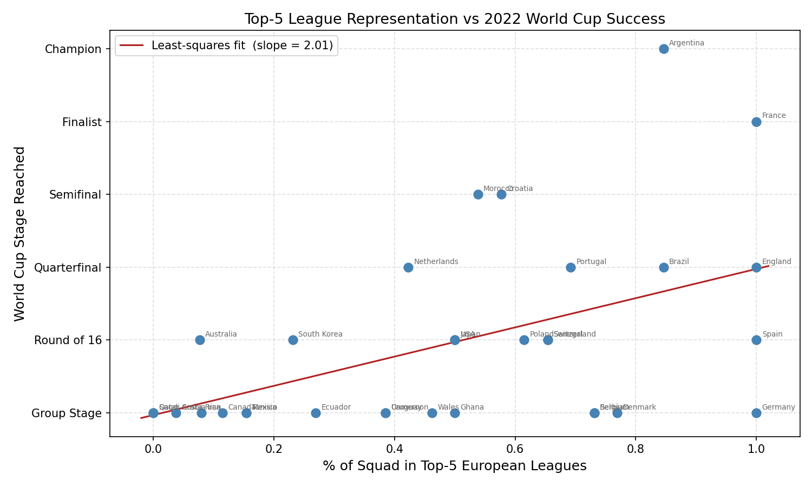

Color scale: red = positive blue = negative white ≈ 0. Diagonal (always 1) is grey.
| pct_in_top5 | fifa_ranking | stage_reached | goal_diff | |
|---|---|---|---|---|
| pct_in_top5 | 1.0000 | -0.6945 | 0.4885 | 0.6529 |
| fifa_ranking | -0.6945 | 1.0000 | -0.5007 | -0.5711 |
| stage_reached | 0.4885 | -0.5007 | 1.0000 | 0.6901 |
| goal_diff | 0.6529 | -0.5711 | 0.6901 | 1.0000 |
Key takeaways: pct_in_top5 ↔ stage_reached r=0.489 (moderate positive); fifa_ranking ↔ stage_reached r=-0.501 (moderate negative — lower rank = stronger team).

The red line is the simple (one-predictor) least-squares fit. The positive slope confirms the correlation above.
Solving the normal equations with two predictors gives:
$x_1$ = pct_in_top5 | $x_2$ = FIFA ranking | $\hat{y}$ = predicted stage reached
Green = outperformed model Red = underperformed model.
| Team | Actual Stage | Predicted | Residual |
|---|---|---|---|
| Argentina | Champion | 2.84 | +3.16 |
| France | Finalist | 2.98 | +2.02 |
| Morocco | Semifinal | 2.01 | +1.99 |
| Croatia | Semifinal | 2.31 | +1.69 |
| Netherlands | Quarterfinal | 2.24 | +0.76 |
| England | Quarterfinal | 2.96 | +0.04 |
| Brazil | Quarterfinal | 2.89 | +0.11 |
| Portugal | Quarterfinal | 2.51 | +0.49 |
| Australia | Round of 16 | 1.09 | +0.91 |
| Japan | Round of 16 | 1.91 | +0.09 |
| South Korea | Round of 16 | 1.51 | +0.49 |
| Senegal | Round of 16 | 2.24 | -0.24 |
| Spain | Round of 16 | 2.91 | -0.91 |
| Switzerland | Round of 16 | 2.32 | -0.32 |
| USA | Round of 16 | 2.12 | -0.12 |
| Poland | Round of 16 | 1.99 | +0.01 |
| Ecuador | Group Stage | 1.15 | -0.15 |
| Denmark | Group Stage | 2.57 | -1.57 |
| Cameroon | Group Stage | 1.30 | -0.30 |
| Serbia | Group Stage | 2.25 | -1.25 |
| Ghana | Group Stage | 0.97 | +0.03 |
| Tunisia | Group Stage | 1.38 | -0.38 |
| Mexico | Group Stage | 1.81 | -0.81 |
| Uruguay | Group Stage | 2.04 | -1.04 |
| Canada | Group Stage | 1.05 | -0.05 |
| Costa Rica | Group Stage | 1.22 | -0.22 |
| Belgium | Group Stage | 2.73 | -1.73 |
| Germany | Group Stage | 2.80 | -1.80 |
| Qatar | Group Stage | 0.69 | +0.31 |
| Saudi Arabia | Group Stage | 0.67 | +0.33 |
| Wales | Group Stage | 2.00 | -1.00 |
| Iran | Group Stage | 1.55 | -0.55 |